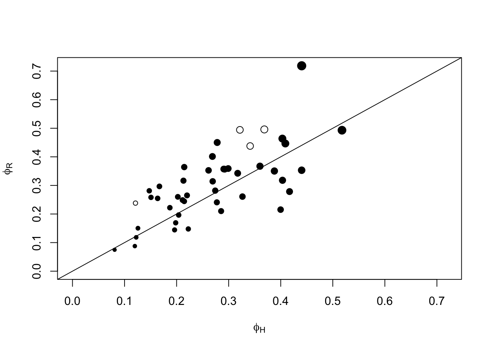
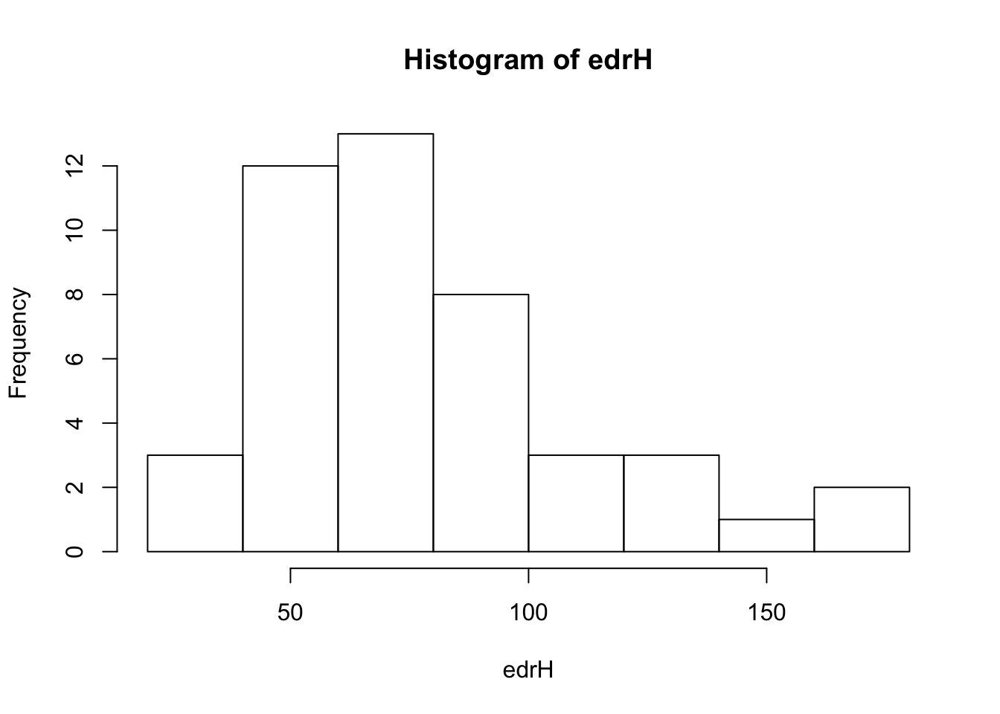
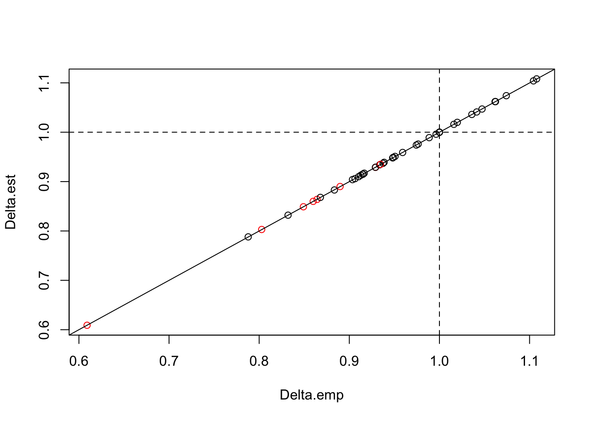
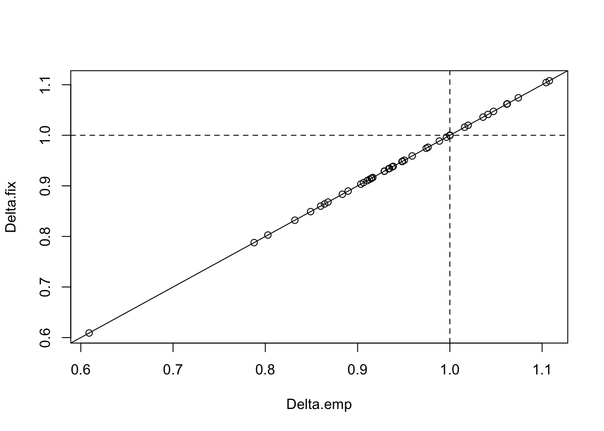

Chapter 6 Dealing with Recordings
6.1 Introduction
Automated recording units (ARU) are increasingly being used for auditory surveys. There are numerous advantages for using ARUs, e.g. recordings can be stored in perpetuity to be transcibed later, ARUs can be programmed to record at select times and datas over long time periods that would be prohibitive using human observers.
Bird point counts have beed traditionally done by human observers. Combining ARU data with traditional point counts thus require an understanding of how the ARU based counts relate to counts made by human observer in the field. The best way to approach this question is by simultaneously sampling by two approaches: (1) human observers doing traditional point count by registering time and distance interval an individual bird was first detected, and (2) record the same session at the same location by an ARU to be identified/trascribed later in laboratory settings.
6.2 Prerequisites
library(bSims) # simulations
library(detect) # multinomial models
library(mefa4) # count manipulation
library(paired) # paired sampling data
library(lme4) # for mixed models6.3 Paired sampling
The expected value of the total count (single species) in a 10-minutes time interval using human observer (subscript \(H\)) based unlimited radius point count may be written as: \(E[Y_{H}] = D A_{H} p_{H}\) where \(Y_{H}\) is the count, \(D\) is population density, \(A\) is the area sampled, \(p_{H}\) is the probability that an average individual of the species is available for detection. The quantity \(p_{H}\) can be estimated based on removal sampling utilizing the multiple time intervals. \(A_{H}\) is often unknown, but can be estimated using the effective detection radius: \(A_{H}=\pi EDR_{H}^2\). Human observer based EDR is estimated from distance sampling.
The ARU based survey (subscript \(R\) for recorder) can distinguish individuals within distinct time intervals, but assigning these individuals is not yet possible using a single ARU. An ARU based count thus can be seen ans an unlimited radius point count where the effective area sampled is unknown. The expected value for an ARU based count for a given species may be written as: \(E[Y_{R}] = D A_{R} p_{R}\). \(p_{R}\) can be estimated based on removal sampling utilizing the multiple time intervals from the ARU based survey. The unknown sampling are can be written as \(A_{R}=\pi EDR_{R}^2\). The problem is that ARU based EDR cannot directly be estimated from the data because of the lack of multiple distance bands or individial based distance information.
The advantage of simultaneous sampling by human observers (H) and ARUs (A) is that population density (\(D=D_{H}=D_{R}\)) is identical by design. Possible mechanisms for differences in availability of bird individuals for detection (\(p_{H}\) vs. \(p_{R}\)) can include differences in how detections are made in the field vs. in laboratory (e.g. possibility of double checking).
Both \(p_{H}\) and \(p_{R}\) can be estimated from the data, and the equivalence \(p=p_{H}=p_{R}\) can be tested. So for the sake of simplicity, we assume that human observer and ARU based \(p\)’s are equal. Dividing the expected values of the counts may be written as:
\[\frac{E[Y_{R}]}{E[Y_{H}]} = \frac{D A_{R} p}{D A_{R} p} = \frac{\pi EDR_{R}^2}{\pi EDR_{H}^2} = \frac{EDR_{R}^2}{EDR_{H}^2}\]
By substituting \(EDR_{R}^2 = \Delta^2 EDR_{H}^2\) (and thus \(EDR_{R} = \Delta EDR_{H}\)) we get:
\[\frac{E[Y_{R}]}{E[Y_{H}]} = \frac{\Delta^2 EDR_{H}^2}{EDR_{H}^2} = \Delta^2\]
This means that dividing the mean counts from ARU and human observed counts would give an estimate of the squared scaling constant (\(\Delta^2\)) describing the relationship between the estimated \(EDR_{H}\) and the unknown \(EDR_{R}\).
6.4 Paired data
Human observer surveys:
- 0-50, 50-100, >100 m distance bands,
- 0-3, 3-5, 5-10 minutes time intervals.
ARU surveys:
- unlimited distance,
- 10 minutes survey in 1-minute time intervals.
Select a subset of species that we’ll work with:
xt <- as.matrix(Xtab(Count ~ PKEY + SPECIES,
data=paired[paired$SurveyType == "HUM",]))
SPP <- colnames(xt)
## number of >0 counts
ndis <- colSums(xt > 0)
## max count
maxd <- apply(xt, 2, max)
nmin <- 15
SPP <- SPP[ndis >= nmin & maxd > 1]
SPP <- SPP[!(SPP %in%
c("CANG","COLO","COGO","COME","FRGU","BCFR","UNKN","RESQ",
"CORA","AMCR","WOSP","WWCR","PISI","EVGR", "RUGR", "SACR",
"NOFL"))]
SPP## [1] "ALFL" "AMRE" "AMRO" "BBWA" "BCCH" "BLBW" "BLJA" "BRCR" "CAWA" "CCSP"
## [11] "CEDW" "CHSP" "CMWA" "CONW" "COYE" "CSWA" "DEJU" "FOSP" "GRAJ" "GRYE"
## [21] "HAWO" "HETH" "LEFL" "LISP" "MAWA" "MOWA" "MYWA" "NAWA" "OCWA" "OVEN"
## [31] "PAWA" "PHVI" "PIWO" "RBGR" "RBNU" "RCKI" "REVI" "SOSP" "SWTH" "TEWA"
## [41] "WISN" "WIWR" "WTSP" "YBSA" "YRWA"6.5 Availability
We estimated availability for human observer and ARU based counts using the time interval information. ARU based intervals were collaped to the 0-3-5-10 minutes intervals to match the human observer based design.
xtdurH <- Xtab(Count ~ PKEY + Interval + SPECIES,
paired[paired$SurveyType == "HUM",])
xtdurH <- xtdurH[SPP]
xtdurR <- Xtab(Count ~ PKEY + Interval + SPECIES,
paired[paired$SurveyType == "ARU",])
xtdurR <- xtdurR[SPP]
Ddur <- matrix(c(3, 5, 10), nrow(xtdurH[[1]]), 3, byrow=TRUE)
Ddur2 <- rbind(Ddur, Ddur)
xdur <- nonDuplicated(paired, PKEY, TRUE)
xx <- xdur[rownames(xtdurR[[1]]),]We estimated availability for species with at least 15 detections in both subsets of the data (making sure that the total count for at least some locations exceeded 1). We analyzed the human observer and ARU based data in a single model using survey type as a dummy variable. We tested if the estimate corresponding to survey type differed significantly from 0 using 95% confidence intervals.
The following table lists singing rates (phi 1/minute), probability of
singing in a 10-minutes interval (p10), number of detections (n),
and whether or not the confidence limits for the survey type estimate
(\(\beta_1\)) contained 0 (i.e. not significant survey effect).
mdurR <- list()
mdurH <- list()
mdurHR <- list()
mdurHR1 <- list()
for (spp in SPP) {
yR <- as.matrix(xtdurR[[spp]])[,c("0-3 min","3-5 min","5-10 min")]
yH <- as.matrix(xtdurH[[spp]])[,c("0-3 min","3-5 min","5-10 min")]
yHR <- rbind(yH, yR)
mdurR[[spp]] <- cmulti(yR | Ddur ~ 1, type = "rem")
mdurH[[spp]] <- cmulti(yH | Ddur ~ 1, type = "rem")
aru01 <- rep(0:1, each=nrow(yH))
mdurHR[[spp]] <- cmulti(yHR | Ddur2 ~ 1, type = "rem")
mdurHR1[[spp]] <- cmulti(yHR | Ddur2 ~ aru01, type = "rem")
}
cfR <- sapply(mdurR, coef)
cfH <- sapply(mdurH, coef)
cfHR <- sapply(mdurHR, coef)
cfHR1 <- t(sapply(mdurHR1, coef))
names(cfR) <- names(cfH) <- names(cfHR) <- names(cfHR1) <- SPP
phiR <- exp(cfR)
phiH <- exp(cfH)
phiHR <- exp(cfHR)
## confidence interval for survey type effect
ci <- t(sapply(mdurHR1, function(z) confint(z)[2,]))
## does CI contain 0?
table(0 %[]% ci)##
## FALSE TRUE
## 4 41plot(phiR ~ phiH,
ylim=c(0, max(phiH, phiR)), xlim=c(0, max(phiH, phiR)),
pch=c(21, 19)[(0 %[]% ci) + 1],
xlab=expression(phi[H]), ylab=expression(phi[R]),
cex=0.5+2*phiHR)
abline(0,1)
Exercise
Which \(\phi\) estimate should we use? Can we usephiHR?
Isn’t that cheating to double the sample size?
Think about what we are conditioning on when estimating \(\phi\), and what makes samples independent.
6.6 Distance sampling
We estimate EDR from human observer based counts:
## Data for EDR estimation
xtdis <- Xtab(Count ~ PKEY + DISTANCE + SPECIES,
data=paired[paired$SurveyType == "HUM",])
xtdis <- xtdis[SPP]
for (i in seq_len(length(xtdis)))
xtdis[[i]] <- as.matrix(xtdis[[i]][,c("0-49 m", "50-100 m", ">100 m")])
head(xtdis$YRWA)## 0-49 m 50-100 m >100 m
## 05-041-01_1 0 0 0
## 05-041-02_1 0 0 0
## 05-041-05_1 0 0 0
## 05-041-06_1 0 0 0
## 05-041-07_1 0 1 0
## 05-041-08_1 0 0 0## distance radii
Ddis <- matrix(c(0.5, 1, Inf), nrow(xtdis[[1]]), 3, byrow=TRUE)
head(Ddis)## [,1] [,2] [,3]
## [1,] 0.5 1 Inf
## [2,] 0.5 1 Inf
## [3,] 0.5 1 Inf
## [4,] 0.5 1 Inf
## [5,] 0.5 1 Inf
## [6,] 0.5 1 Inf## predictors
xdis <- nonDuplicated(paired, PKEY, TRUE)
xdis <- xdis[rownames(xtdis[[1]]),]Fitting distance sampling models for each species:
mdis <- pblapply(xtdis, function(Y) {
cmulti(Y | Ddis ~ 1, xdis, type = "dis")
})tauH <- sapply(mdis, function(z) unname(exp(coef(z))))
edrH <- 100 * tauH
round(sort(edrH))## CEDW CMWA BBWA BLBW BRCR NAWA LEFL AMRE HAWO PHVI YRWA MAWA CSWA BCCH OCWA
## 34 36 39 41 42 45 46 51 52 53 53 54 55 56 59
## CAWA COYE TEWA MOWA PAWA YBSA LISP MYWA CCSP DEJU CHSP CONW OVEN REVI GRAJ
## 61 62 63 64 65 67 69 69 70 70 73 74 77 81 82
## RBGR RCKI RBNU SWTH AMRO WTSP WIWR ALFL SOSP BLJA FOSP HETH GRYE WISN PIWO
## 85 86 88 91 92 99 101 102 114 129 130 138 158 164 167hist(edrH)
6.7 Scaling constant
Counts are often modelled in a log-linear Poisson GLM. We used GLM to estimate the unknow scaling constant from simultaneous (paired) surveys. The poisson mean for a count made at site \(i\) by human observer is \(\lambda_{i,H} = D_{i} \pi EDR_H^2 p\). \(EDR_H\) and \(p\) are estimated using distance sampling and removal sampling, respectively. Those estimates are used to calculate a correction factor \(C = \pi EDR_H^2 p\) which is used as an offset on the log scale as \(log(\lambda_{i,H}) = log(D_{i}) + log(C) = \beta_0 + log(C)\), where \(\beta_0\) is the intercept in the GLM model.
Following the arguments above, the poisson mean for an ARU based count made at site \(i\) is \(\lambda_{i,R} = D_{i} \pi \Delta^2 EDR_H^2 p = D_{i} \delta^2 C\). On the log scale, this becomes \(log(\lambda_{i,R}) = log(D_{i}) + log(\Delta^2) + log(C) = \beta_0 + \beta_1 + log(C)\), where \(\beta_1\) is a contrast for ARU type surveys in the log-linear model.
We used survey type as a binary variable (\(x_i\)) with value 0 for human observers and value 1 for ARUs. So the Poisson model is generalized as: \(log(\lambda_{i}) = \beta_0 + x_i \beta_1 + log(C)\). \(\Delta\) can be calculated from \(\beta_1\) as \(\Delta = \sqrt{exp(\beta_i)}\).
We used the Poisson GLM model describe before to estimate the \(\beta_1\) coefficient corresponding to survey type as binary predictor variable, and an offset term incorporating human observer based effective area sampled and availability.
phi <- phiHR
tau <- tauH
Y <- as.matrix(Xtab(Count ~ PKEYm + SPECIES, paired))
X <- nonDuplicated(paired, PKEYm, TRUE)
X <- X[rownames(Y),]
X$distur <- ifelse(X$Disturbance != "Undisturbed", 1, 0)
X$SurveyType <- relevel(X$SurveyType, "HUM")
library(lme4)
mods <- list()
aictab <- list()
Delta <- matrix(NA, length(SPP), 3)
dimnames(Delta) <- list(SPP, c("est", "lcl", "ucl"))
#spp <- "ALFL"
for (spp in SPP) {
y <- Y[,spp]
C <- tau[spp]^2 * pi * (1-exp(-phi[spp]))
off <- rep(log(C), nrow(X))
mod0 <- glm(y ~ 1, X, offset=off, family=poisson)
mod1 <- glm(y ~ SurveyType, X, offset=off, family=poisson)
mod2 <- glm(y ~ SurveyType + distur, X, offset=off, family=poisson)
aic <- AIC(mod0, mod1, mod2)
aic$delta_AIC <- aic$AIC - min(aic$AIC)
aictab[[spp]] <- aic
Best <- get(rownames(aic)[aic$delta_AIC == 0])
#summary(Best)
mods[[spp]] <- Best
## this is Monte Carlo based CI, no need for Delta method
bb <- MASS::mvrnorm(10^4, coef(mod1), vcov(mod1))
Delta[spp,] <- c(sqrt(exp(coef(mod1)["SurveyTypeARU"])),
quantile(sqrt(exp(bb[,"SurveyTypeARU"])), c(0.025, 0.975)))
}
aic_support <- t(sapply(aictab, function(z) z[,3]))
round(aic_support)## [,1] [,2] [,3]
## ALFL 247 244 0
## AMRE 65 66 0
## AMRO 26 21 0
## BBWA 22 23 0
## BCCH 28 29 0
## BLBW 16 18 0
## BLJA 5 7 0
## BRCR 27 29 0
## CAWA 18 20 0
## CCSP 68 68 0
## CEDW 9 11 0
## CHSP 6 5 0
## CMWA 23 25 0
## CONW 20 21 0
## COYE 14 16 0
## CSWA 22 23 0
## DEJU 102 99 0
## FOSP 97 98 0
## GRAJ 0 0 0
## GRYE 6 8 0
## HAWO 0 1 1
## HETH 19 17 0
## LEFL 0 2 4
## LISP 50 52 0
## MAWA 0 1 0
## MOWA 0 2 3
## MYWA 34 36 0
## NAWA 0 1 1
## OCWA 132 133 0
## OVEN 378 375 0
## PAWA 126 128 0
## PHVI 0 2 3
## PIWO 8 10 0
## RBGR 0 2 1
## RBNU 37 38 0
## RCKI 13 9 0
## REVI 23 21 0
## SOSP 65 66 0
## SWTH 37 39 0
## TEWA 22 15 0
## WISN 1 3 0
## WIWR 35 35 0
## WTSP 167 168 0
## YBSA 19 18 0
## YRWA 26 10 0The following table show the estimate of \(\Delta\) for each species, and the corresponding estimates of effective detection radius (EDR) in meters and effective area sampled (\(A\)) in ha:
But wait, if we started from expected values, shouldn the ration of the mean counts give us \(\Delta^2\)? Let’s see if we can get a similar \(\Delta\) value from mean counts:
(gm <- groupMeans(Y[,SPP], 1, X$SurveyType))## ALFL AMRE AMRO BBWA BCCH BLBW BLJA BRCR CAWA
## ARU 0.2152 0.2200 0.1418 0.1809 0.0978 0.1149 0.1271 0.1663 0.06846
## HUM 0.2910 0.2029 0.2200 0.2054 0.1198 0.1271 0.1222 0.1516 0.06846
## CCSP CEDW CHSP CMWA CONW COYE CSWA DEJU FOSP
## ARU 0.04401 0.1711 0.4890 0.07335 0.07824 0.05623 0.2127 0.2274 0.06601
## HUM 0.07090 0.1711 0.5844 0.06357 0.10024 0.06112 0.2421 0.3154 0.05379
## GRAJ GRYE HAWO HETH LEFL LISP MAWA MOWA MYWA
## ARU 0.2249 0.08313 0.04401 0.5428 0.08802 0.07824 0.4132 0.2494 0.3252
## HUM 0.2714 0.09535 0.06357 0.6479 0.09780 0.07579 0.4597 0.2616 0.3276
## NAWA OCWA OVEN PAWA PHVI PIWO RBGR RBNU RCKI REVI
## ARU 0.1222 0.110 1.127 0.1345 0.07579 0.1516 0.10758 0.1540 0.2958 0.9291
## HUM 0.1002 0.132 1.306 0.1345 0.07579 0.1345 0.09535 0.1785 0.3961 1.0636
## SOSP SWTH TEWA WISN WIWR WTSP YBSA YRWA
## ARU 0.05623 0.5281 0.7433 0.1076 0.3081 1.560 0.1418 0.05623
## HUM 0.06846 0.5403 0.9389 0.1002 0.3667 1.643 0.1883 0.15159Delta_summary$Delta.emp <- sqrt(gm["ARU",] / gm["HUM",])
plot(Delta.est ~ Delta.emp, Delta_summary,
col=c(2,1)[(1 %[]% Delta[,-1]) + 1])
abline(0, 1)
abline(h=1, v=1, lty=2)
It looks like the fancy modelling was all for nothing, theory prevailed. But it is always nice when things work out as expected.
We can also see that \(\Delta\) (especially the significant ones) tended to be less than 1, indicating that overall EDR for ARUs is slightly smaller that for human point counts. \(\Delta\) was significantly different from 1 only for relatively few species.
Exercise
Can we pool all species’ data together to estimate an overall \(\Delta\) value? Would that characterize this particular ARU type well enough? What are some of the arguments against this pooling? What might be driving the variation across species?6.8 Data integration
Now we will pretend that we have no paired design. See how well fixed effects can handle the data integration without calibration.
i <- sample(levels(X$PKEY), floor(nlevels(X$PKEY)/2))
ss <- c(which(X$PKEY %in% i), which(!(X$PKEY %in% i)))
mods2 <- list()
for (spp in SPP) {
y <- Y[ss,spp]
C <- tau[spp]^2 * pi * (1-exp(-phi[spp]))
off <- rep(log(C), length(ss))
mod <- glm(y ~ SurveyType, X[ss,], offset=off, family=poisson)
mods2[[spp]] <- mod
}
Delta_summary$Delta.fix <- sapply(mods2, function(z) {
sqrt(exp(coef(z)[2]))
})
plot(Delta.fix ~ Delta.emp, Delta_summary)
abline(0, 1)
abline(h=1, v=1, lty=2)
Exercise
Use the script below to push the fixed effects method to the limit and see where it fails. We will explore the following two situations: (1) sample size and number of detections is small, (2) sampling is biased with respect to habitat strata.
X$open <- ifelse(X$Class_Name %in% c("Open Herb/Grass",
"Open coniferous","Open Mature Deciduous","Open Mixed",
"Open Northern","Open Young Deciduous",
"Open Young Mixed","Poorly Drained"), 1, 0)
## proportion of samples from ARUs (original)
prop_aru <- 0.5
## proportion of ARU samples coming from open habitats
prop_open <- 0.6
n_aru <- round(nrow(X) * prop_aru)
n_hum <- nrow(X) - n_aru
w_aru <- prop_open*X$open + (1-prop_open)*(1-X$open)
w_hum <- (1-prop_open)*X$open + prop_open*(1-X$open)
id_aru <- sample(which(X$SurveyType == "ARU"), n_aru,
replace=TRUE, prob=w_aru[X$SurveyType == "ARU"])
id_hum <- sample(which(X$SurveyType == "HUM"), n_hum,
replace=TRUE, prob=w_hum[X$SurveyType == "HUM"])
ss <- c(id_aru, id_hum)
addmargins(with(X[ss,], table(open, SurveyType)))
mods3 <- list()
for (spp in SPP) {
y <- Y[ss,spp]
C <- tau[spp]^2 * pi * (1-exp(-phi[spp]))
off <- rep(log(C), length(ss))
mod <- glm(y ~ SurveyType, X[ss,], offset=off, family=poisson)
mods3[[spp]] <- mod
}
Est <- sapply(mods3, function(z) sqrt(exp(coef(z)[2])))
plot(Est ~ Delta.emp, Delta_summary)
abline(0, 1)
abline(h=1, v=1, lty=2)
abline(lm(Est ~ Delta.emp, Delta_summary), col=2)6.9 ABMI data
logitudinal nature
extrapolation issues